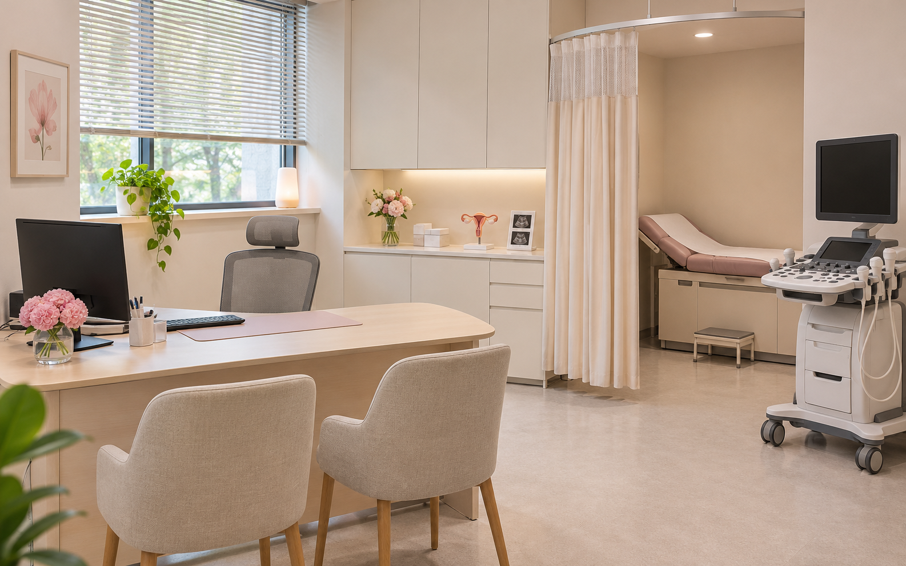

접수·대기공간
접수대의 작업 가능한 일반 표면과 대기 의자 주변, 출입구와 바닥을 청소합니다. 진료 기록과 환자 정보가 담긴 서류는 취급하지 않습니다.
산부인과는 접수·대기공간, 상담실, 진료공간별로 출입 조건과 이용 시간이 다릅니다. 원내케어는 사생활 보호와 진료실 출입 기준을 먼저 확인하고, 병원이 허용한 일반 공간을 정기적으로 관리합니다.
진료실은 허용된 시간과 범위 안에서, 상담 자료와 개인 물품은 임의로 다루지 않습니다.

접수대의 작업 가능한 일반 표면과 대기 의자 주변, 출입구와 바닥을 청소합니다. 진료 기록과 환자 정보가 담긴 서류는 취급하지 않습니다.
테이블과 의자 주변, 일반 가구 외부, 가구 하부와 바닥을 정리합니다. 환자 상담 일정과 병원 직원의 준비 시간에 맞춰 출입 시간을 협의합니다.
병원이 출입을 허용한 시간에 이동 통로와 접근 가능한 바닥을 관리합니다. 진료대·검사 장비·사용 중인 물품의 취급은 병원 담당자의 기준을 따릅니다.
환자 이동 통로, 출입구와 화장실의 일반 청소 범위를 정합니다. 화장실과 일반 진료공간의 도구를 분리하고, 작업 후 이동에 지장이 없도록 정돈합니다.
진료·검사 중인 공간에는 임의로 출입하지 않습니다. 진료대와 검사 장비, 임상 기구, 사용 후 소모품은 일반 환경청소와 구분하며 의료폐기물 수거는 기본 범위에 포함하지 않습니다. 분만·수술 관련 공간은 일반 공간과 같은 조건으로 안내하지 않고 병원별 출입 규정과 별도 작업 조건을 먼저 확인합니다.
면적뿐 아니라 진료실별 출입 가능 시간과 담당자의 승인 방식, 방문 횟수와 투입 인원, 실제 작업 범위를 함께 확인합니다. 정기청소와 별도 집중청소·대청소의 포함 여부를 구분해 견적을 협의합니다.
환자 사생활과 진료 동선을 우선해 출입 가능한 공용구역과 작업시간을 나눠 협의합니다. 진료·검사 중인 공간에는 임의로 출입하지 않습니다.
임상 장비와 기구의 처리는 일반 환경청소와 구분합니다. 병원이 허용한 주변 바닥과 일반 가구 등의 범위를 먼저 정합니다.
임의로 이동하거나 정리하지 않습니다. 청소 전에 병원 담당자와 접근 제한 구역과 물품의 처리 기준을 공유합니다.
기존 계약의 종료 조건과 불편사항을 정리한 뒤 새 작업 범위와 시작일을 협의합니다. 청소업체 교체 안내를 참고하세요.
서울·경기 병원·의원의 정기청소를 상담합니다. 병원 위치와 출입 조건, 희망 작업시간과 실제 인력 배치 가능 여부를 확인한 뒤 일정을 안내합니다.
공간 구성과 현재 불편한 구역, 희망 방문 주기를 알려주세요. 병원 운영 조건에 맞는 작업 범위와 시간을 함께 확인합니다.